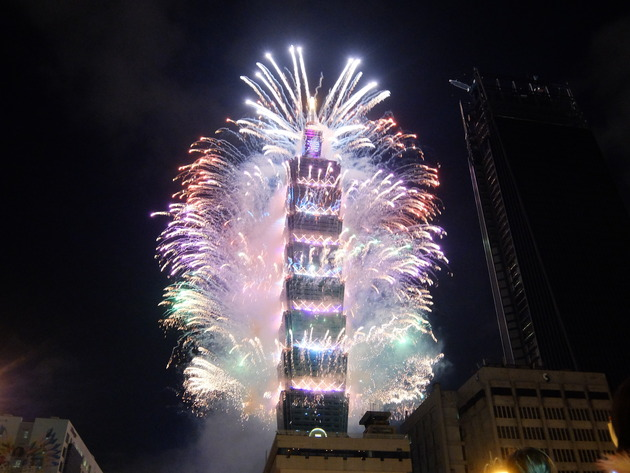

| 2019年1月の歴史: 地獄への階段 | |
| 陳列館 | |
| (2019) | |
201 9年1 月の歴史
陳列館

初めに
2 1 世紀も、新しいものは産まないまま、人間で言えば、そろそろ成人を迎えようとしている。ここ、日本でも前世紀の不況を引き摺ったまま、経済的にも文化的にも社会的にも何のブレークスル―も見い出せぬまま、日々が過ぎている。そこで、何とかミクスとか称して、無理な金融緩和で、財政赤字を莫大にし、無駄な公共投資とイベントを企画して、破滅の一途に突き進んでいる国もある。しかも、その国は、次代を担う青少年が育たず、むしろ自己保全の為に青少年を犠牲にする老人が満ち溢れている。正にゾンビのゾンビによるゾンビの為の国である。
この国では、来年 、 202 0 年に、その破滅の象徴であるオリンピックを控えているが、折しもの招致に纏わる賄賂問題と、有力選手の重病の罹患で、すっかり出鼻が挫かれている。そもそも、無理にでっち上げたイベントであるから、経済合理性もなく、その意義は薄いというよりも、開催はその後の大不況を齎す事、請け合いである。
こうした綻びとかりそめの祝賀ムードと根拠に無い希望（？）に満ち溢れた、その国では、また何時大規模災害、例えば大地震とそれに伴う大津波、はたまた火山の大噴火など起きるか判らない。しかし、そうした大災害はむしろ、天佑と言ってもいいかも知れない。何故なら、それにより、不自然な政権にピリオドを打ち、余分な人口をカット出来るからだ。
本書は、毎日起きる、あの国を中心とした事件を取り上げ、それに論評を加え、毎月出版する同時進行ドキュメントである。全く、しょうもない事件の連続であるが、それもこれも、あの国の程度の低さ、モラルの欠如、貧しさ等々を反映しているものだから、それぞれの事件・事象が関連性を持っている。
実に、歴史は進歩しない、繰り返すのみ、しかも退歩していく。また、何人もそれを止める事は不可能である。
陳列館
目次
201 9 年
1月1 日（火）原宿でテロ、日下部和博容疑者現行犯逮捕
２日（水）茨城でデイサービス車衝突 、 10 5 歳 ・ 7 6 歳死亡
３日（木）熊本和水町震 度 6
４日（金）横浜簡易宿泊施設火 事2 人死亡、東証大発 会2 万円割れ
５日（土）豊洲初セリ、大間マグ ロ3億 336 0 万円で落札
６日（日）俳優高橋一生破局（森川葵と）
７日（月）新千歳空港大雪で大混乱、外国人から観光税徴収
８日（火）カルロスゴーン初出廷
９日（水）韓国徴用工、日本企業資産差し押さえ
１０日（木）紅白出場純烈友井雄亮、凄 惨 D V 、芸能界引退
１１日（金）日 立 300 0 億円損失計上（英原発） 、 JO C 竹田捜査開始
１２日（土）厚生労働省の雇用保険金など過少支給 、 53 7 億円、対 象 197 3 万人
１３日（日）パリのパン屋で爆 発3 人死亡
１４日（月）市原悦子盲腸で死亡 （ 8 2 歳）
１５日（火）竹田恒 和7 分間の会見、質疑応答無し
１６日（水）稀勢の里引退
羽賀健二逮捕 が NH K のトップニュースに
１７日（木）イギリ ス E U 離脱否認
１８日（金）枝野代表伊勢神宮参拝
１９日（土）厚生労働大臣インフルエンザに
２０日（日）ミサイル照射問題、打開できず に1 ケ月、
11 3 歳野中正造死亡
２１日（月）兵庫老人ホームでインフ ル7 人死亡
２２日（火）インフル罹患の女性、中目黒駅ホーム転落死
２３日（水 ） 201 8 年貿易赤 字1兆 203 3 億円、小室圭文書発表
２４日（木）群馬老人ホームでインフ ル5 人死亡
２５日（金）桜台駅で人身事故
２６日（土）チェコ、ぺトラ・クビトバ全豪準優勝
２７日（日）グループ嵐解散
２８日（月）厚生省偽造拡大、安倍施政方針で明治天皇の好戦和歌引用
「しきしまの大和心の をゝしさは ことある日なぞあらはれにける」
２９日（火）大坂なおみインタビュー発言、誤訳される
"I get why people would upset about it"
３０日（水）千葉幼女の父親により殺害
３１日（木）茨城出会い系殺人遺体発見
1月1 日（火）原宿でテロ、日下部和博容疑者現行犯逮捕
200 0年9月 1 1 日の米国同時多発テロは今尚真相が闇の中であるが、その後各国でテロや大規模戦闘を誘発しているので、正にエポックメーキングであった。それまでの人類の歴史での戦争の概念を、変えたかも知れない。即ち、組織化された軍隊でなくとも、十分に敵国に攻撃出来、そのコストも安価に済むという点である。今後、ドローンの技術などが発達すれば、テロ行為は、戦闘行為に昇華し、正に素人でも戦争が仕掛けられる日が来るであろう。インターネットの世界で、相手のサーバーを破壊するなどのサイバー攻撃は、猖獗を極めているが、具体的な武力を伴う攻撃も技術が可能にしていく。そうすると、従来の犯罪とは異なる、ハイテク技術を用いた人身攻撃が可能になるだろう。例えば、ネット技術を使い、遠隔操作で人に傷害を与える。それも攻撃した痕跡も残さず、且つ効率的に行う、などだ。しかし、そうした技術が確立するまでは、傷害を伴う犯罪は 、 2 1 世紀のいまもなお、極めてアナログで、人類の歴史で累々と継続している行為を繰り返している 。 201 9 年が正に始まって数分も経たない内に本犯罪は起こった。
報道によれば、容疑者は当初、初詣客の賑わう明治神宮で、火炎放射器をまき散らし、大量殺人を狙ったらしいが、交通規制でそれが叶わず、代替案として、原宿の竹下通りを暴走したらしい。そして無辜の市民が犠牲となった。あらゆる犯罪者は自己顕示欲の激しさから自らの行動にコントロール出来ない訳であるから、その計画変更は内心、さぞや忸怩たるものであったろう。しかもその満足度は、犠牲者の数に正比例するから今回の犯行は、容疑者にとって、正に痛恨の極みだったろう。
犯罪とテロの境界線を探すのは、実は困難だ。仮に犯罪を個人的な行為、テロを公的（敵）な行為とした場合、前者は個人主義の極みとして、糾弾されるが、後者はその犯行声明に公な懲らしめや、宗教的対立などを含み、その行為を正当化する。しかし、テロはその包含する範囲や規模が大きく、一概に定義できない。例えば、国家権力による、個人の弾圧なども、やるせないテロである。その国では年間何百億円かのテロ対策費が計上され、警備や設備に費やされるが、余り効果を挙げていないばかりか、徒に一般市民の生活を圧迫していないか？一例を挙げるとあの国の都市のごみ問題も、テロ対策と称して、本来あるべく公共のゴミ箱を封鎖し、結果として、問題を悪化させている。テロなど起こらないのに、警察は予算のみを要求、毎年消化していく。組織防衛の為の口実として、適当だからだ。これを国家による「テロ」と言わずして、なんと言うか？今回の元旦の原宿テロ行為は、極めて珍しいこの都市でのテロであった。見方を変えれば、国家のテロ対策を正当化させる、小さな小さな貢献であった。
２日（水）茨城でデイサービス車衝突 、 10 5 歳 ・ 7 6 歳死亡
その国の、止めどもない高齢化は、財政赤字の最大の要因であり、国家を経済的・文化的そして社会的に破綻に導くものである。
マスコミに取り上げられる事の多い、老人養護施設周りの出来事（多くのケースは死傷者が発生する）、老人による交通事故、徘徊その他が老人問題をますます悪化している。
こ の2 日に報じられた交通事故は、老人が引き起こしたものではないが、犠牲者の年齢が極めて眼に着くものだった。しかし 、 10 0 歳を超えた老人が稀ではなくなった現在、別に驚くには当たらない事件かも知れない。
最早、犬が人間を噛んでもニュースにならない。人間が犬を噛めばニュースになる、という奴だ。
３日（木）熊本和水町震 度 6
九州の内陸部での地震は、従来は稀であった様だ。しかし、九州内の火山の多さから考えれば、どこで起こっても不思議ではなかった様だ。数年前の熊本地震は、一つの町を壊滅し、熊本市内のシンボルである城に大きなダメージを与えた。正に自然は、的確に残酷な破壊を行う。それを政治のせいにされるのは簡単であるが、天災は必ず、人災を伴うから、そのした結び付きは、妥当であろう。
この震 度6 は、正月気分を吹き飛ばすとともに、大災害を予感させるものであった。また、地震後に、これは数年前の地震の余震だとの、したり顔の気象庁の解説は毎度の事だ。
結果論ばかり言わず、たまには予想してみろ、と言いたい。まあ、それだけの力も勇気もないであろうか。
４日（金）横浜簡易宿泊施設火 事2 人死亡、
火災が起こる度に思う。事故であろうが、放火であろうか、そこで焼死した被害者は大変な災難であったが、仏教国では一般に火葬、即ち荼毘に付される訳であるから、手間とコストが省けたという事だ。老齢化の発展で、その国での年間の死亡者も増加している。そうなると、火葬場のキャパを超える事態も目前である。今更、古来の土葬の復活も、衛生上、猛反対に遭うかも知れない。しかし、背に腹は代えられない 。 31 1 の時を思い返して欲しい。大量に産まれた津波による犠牲者は、荼毘に付すには余りにも数が多く、やむに已まれず、一部は土葬された様だ。その後、改葬されたかは不明だ。
同日 東証大発 会2 万円割れ
その兆候は、前年末からあった。元々、米国の株価に連動するところの多い、東証であるが、アベノミクスという、不自然な経済政策で、政権の維持の為、年金資金・日銀による赤字国債の投入で、株価はかろうじて維持されているが、残念ながら市場の下落基調は止まられず、多大な含み損が発表された。所詮は人口的な株価であるから、今後、更なる下落の可能性を秘めている。現金な事に、政権の支持率も株価に反比例する。しかも、一度、株価の下落が始まると、アルゴリズムのなせる業か、売りが売りを呼び、予想を超えた下落率を示す。その傾向は、世界の主要マーケットの通弊だ。思えば、その国 の 198 9 年のバブルの崩壊も同じ事が起きた。また、皮肉な事にその国の株式保有者 は 7 0 ％が海外の機関投資家である以上、下落が始まると、そうした機関投資家は空売りで、多額の利益を得る。それまで、上がり基調であれば、現物で利益を出した上、空売りで更に儲かる構図だ。馬鹿を見るのは、なけなしの自己資金で現物（特に日経平 均 ET F など）に投資した国内の個人投資家である。何度も同じ愚と過ちを繰り返すものである。詐欺集団に引っ掛かり、多額の金子を詐取されるのも、公的な株式市場で損をするのも、等価である。言葉の正確な意味で「自己責任」である。
５日（土）豊洲初セリ、大間マグ ロ3億 336 0 万円で落札
今や年中行事と化している、「すしざんまい」による。採算度外視のマグロ初セリの高額落札だ。その国の「鮪信仰」とも呼べる風潮が為せる業である。しかし、今後、鯨同様、鮪の乱獲にもメスが入れば、養殖ではとても賄えぬマグロ需要は、自ずとバブルがはじけ、高額なマグロには消費者は背を向けるであろう。
その国には、国産品信仰が根強いが、品質や味に圧倒的な優位性があるのならともかく、消費者を騙し、徒に暴利をむさぼる生産者及び中間流通業者は、天誅が下されて然るべきである。こうした鮪に代表される海産物・和牛・銘柄米がその代表だ。
６日（日）俳優高橋一生破局（森川葵と）
少子化疲れというか、未婚離れというか、最近は結婚が増えた気がする。否、業を煮やした肉食女子が、気弱な男を捕まえ、強引に交際や結婚を迫る構図だ。従い、女性からは、飽きれば相手に別れを告げるのも容易だ。かてて加えて、昨今 の LGB T などの流行が話をややこしくする 。 2 1 世紀は、性的にも混乱しながら、人類は種を絶やす、と思われる。
７日（月）新千歳空港大雪で大混乱
地球温暖化の陰で、冬場の低温は、北半球の通弊である。このまま、氷河期に入るとは思わぬが、四季は極端に二季化し、灼熱の夏と、極寒の冬が交互に訪れる可能性が高い。
同日 外国人から観光税徴収
作為的な円安と韓国・中国からの観光客に支えられて、一義的な収入を挙げてるが、これは再度の円高で粉砕される。それにしてもこのタイミングでの観光税など、時既に遅しであるし、かつ、反発を食らうだけである。
９日（水）韓国徴用工、日本企業資産差し押さえ
日韓問題の解決法は、唯一、中国主導のアジア連合を設立し、日韓双方が加入し、主権を放棄する事だ。
１０日（木）紅白出場純烈友井雄亮、凄 惨 D V 、芸能界引退
芸能界に巣食 う DQ N の跋扈は、それを支えるグルーピーに責めを負わせるべきだ。
それが、根絶の道だ。
１１日（金）日 立 300 0 億円損失計上（英原発）
数々のその国の大企業の没落は、遂に最後の砦までに至った。
同日 JO C 竹田捜査開始
公然の秘密である、東京五輪の賄賂問題は、フランスの司直により、メスを入れられ、返上に追い込まれるべきだ。そして 、 E U 離脱で経済破綻目前のロンドンに譲るべきで、それが両国の財政負担を回避する。一石二鳥である。
１２日（土）厚生労働省の雇用保険金など過少支給、
53 7 億円、対 象 197 3 万人
これは、国家による故意の過少支給であり、そこまで、国家財政は悪化している事の証拠である。
１３日（日）パリのパン屋で爆 発3 人死亡
テロは大衆化してきた。
１４日（月）市原悦子盲腸で死亡 （ 8 2 歳）
実際は高齢過ぎるのに、相対的に早逝と見なされる不思議。
１５日（火）竹田恒 和7 分間の会見、質疑応答無し
質疑応答無く、正に無言でも語るに落ちた典型例。それにしても、記者会見として最低最悪を更新した。
１６日（水）稀勢の里引退
作為的に製造された「日本人横綱」の哀れな末路。「世界相撲協会」に改名を。
同日 羽賀健二逮捕 が NH K のトップニュースに
時の政府は、マスコミを使って、大衆の意識誘導を行う。その典型例がこれだ。
１７日（木）イギリ ス E U 離脱否認
後悔後に絶たず。
１８日（金）枝野代表伊勢神宮参拝
幽霊の正体見たり、偽左翼。その国では、支持政党、支持政治家無しが正解。
１９日（土）厚生労働大臣インフルエンザに
同情を買おうとして、すっかり裏目に出た。
２０日（日）ミサイル照射問題、打開できず に1 ケ月
その国の政府による、でっち上げ事件。反韓感情育成の為のフェイクニュース。しかし、全て自らに跳ね返る。
11 3 歳野中正造死亡
本当にその年齢だったのか、慎重な検証が必要。
２１日（月）兵庫老人ホームでインフ ル7 人死亡
インフルと言えば、免罪符にならない。投薬したのか、処置も含めて検視が必要。
２２日（火）インフル罹患の女性、中目黒駅ホーム転落死
インフルのみが強調されるが、本質は労働強化による過労、労災だ。
２３日（水 ） 201 8 年貿易赤 字1兆 203 3 億円
以後、永続的な円高の復活で、赤字はますます増える。その内に、輸入のそのものが減少し、バランスするかも知れない。
同日 小室圭文書発表
ペテン師による、究極の結婚詐欺であるが、最大の責任は、世間知らずの長女と痴呆老人である祖父の賛成に帰せられる。
２４日（木）群馬老人ホームでインフ ル5 人死亡
2 1 日の記事同様に、正確な検視結果を待ちたい。
２５日（金）桜台駅で人身事故
全ての事故は、その後に続く、安全確認と称する人災を伴う。迷惑な話だ。
２６日（土）チェコ、ぺトラ・クビトバ全豪準優勝
そのファイティングスピリットは賞賛に値する。勝負に勝って、試合に負けた典型例。
２７日（日）グループ嵐解散
そのプロダクション、興行関係者にとって、大打撃である筈だが、敢えて解散する背景には重大なコンプライアンス違反等が隠されていると考えられる。
２８日（月）厚生省偽造拡大
本事案の受益者は、経団連、即ち今季のベースアップを見送る格好の口実ができた財界である。
同日 安倍施政方針で明治天皇の好戦和歌引用「しきしまの大和心のをゝしさはことある日なぞあらはれにける 」
ファッショ政権は自己の都合で、借古説今を行う。通常、引用されるべきは、
「よもの海みなはらからと思ふ世になど波風のたちさわぐらむ」
２９日（火）大坂なおみインタビュー発言、誤訳される
"I get why people would upset about it"
英語というものは 、 Englis h とは、根本的に異なる言語だ。しかも、意味も伝えていない。
３０日（水）千葉幼女の父親により殺害
この事件を大々的に取り上げれば上げるほど、統計偽造などの重大事件を隠ぺいしている様に感じる。
３１日（木）茨城出会い系殺人遺体発見
勿論 、 DQ N 男の身勝手さと残忍さが最大の悪であるが、軽々に誘いに乗った被害者側に責任は無いか？
号外 詐欺事件頻発
●青汁王子の数億円の脱税、逮捕
●「テキシアジャパンホールディング 」 46 0 億円の単純出資詐欺、主犯逮捕
●「ケフィア事業振興会 」 100 0 億円以上の干し柿事業詐欺、社長自殺
（2 月号に続く）